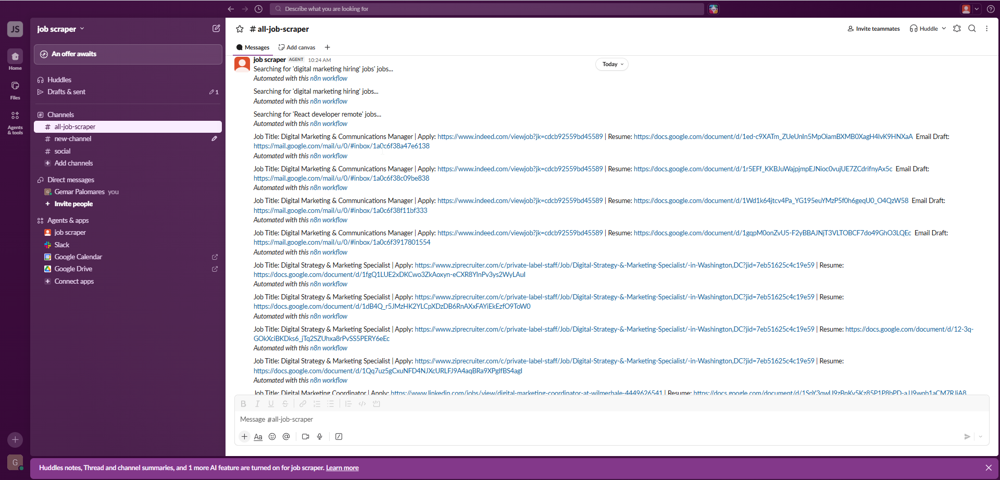
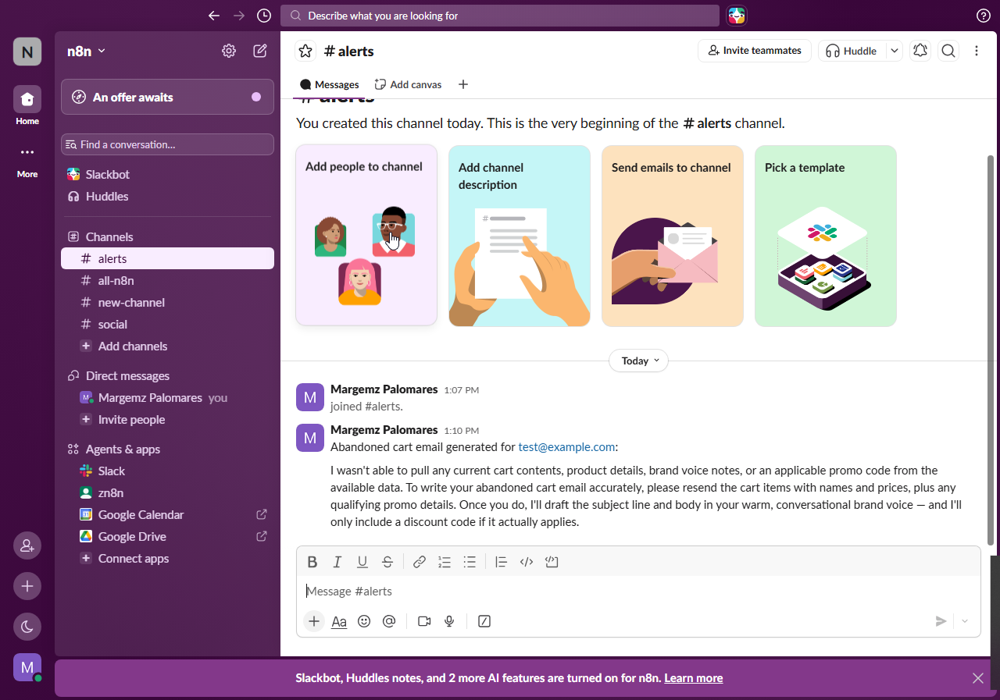

A deep architectural breakdown of multi-stage automation workflows engineered by Marlon Palomares. Featuring self-healing APIs, multi-turn AI qualification agents, vector-embedded RAG knowledge bases, and zero-maintenance CRM synchronization pipelines.
⚙️ n8n Enterprise Cloud/Self-Hosted🧠 DeepSeek V3 / R1 Reasoning Agents⚡ Gemini 3 Flash Intent Triage📐 OpenAI GPT-4o-mini Structured Output🗄️ Supabase pgvector Store💬 Slack API Interactive Blocks✉️ Gmail API OAuth2 Auto-Responder📱 Telegram Bot API Push Alerts📄 Google Workspace Docs / Sheets / Drive🔍 RapidAPI JSearch Jobs Engine🛡️ NeverBounce API Email Verification
< 5 Min
Autonomous Lead Qualification & Response Time
2–3 Hrs
Saved Daily per Operator via AI Inbox Zero & Auto-Triage
5x Retry
Exponential Backoff on CRM Sync for 0% Data Drop
100%
Grounded Vector RAG with Zero Hallucination Guardrails
System 01 · Intelligent Recruitment & ATS Engineering
AI Job Scraper & ATS Resume Optimizer
🟢 22 Nodes · Active Production
A multi-stage autonomous pipeline triggered from Slack. Validates queries using Gemini 3 Flash, fetches live marketplace jobs from RapidAPI, maintains a cross-run 1,000-item deduplication buffer, optimizes master resumes for ATS algorithms via DeepSeek reasoning, clones and writes Google Docs templates, drafts customized Gmail messages, and posts rich result cards back to Slack.
Step 01 · Trigger
Slack Channel Ingest
Monitors #all-job-scraper for real-time user query commands.
Step 02 · Classify
Gemini 3 Intent Gate
Filters non-job noise and rejects invalid queries with feedback.
Step 03 · Scrape
RapidAPI JSearch
Pulls live job postings with 3x retry resilience & split execution.
Step 04 · Dedupe
1000-Item Cache
Prevents duplicate processing across historical executions.
Step 05 · AI Optimize
DeepSeek ATS Agent
Tailors experience, skills & summaries to match keywords.
Step 06 · Delivery
Docs & Gmail Draft
Clones Drive template, writes doc, and sends Slack summary card.
Guarantees clean input sanitization and zero duplicate work:
Gemini 3 Flash Intent Triage: Evaluates if message is a job query. Valid queries receive immediate feedback ("Searching for '<query>' jobs..."); invalid ones receive formatted hints.
RapidAPI JSearch Integration: Queries /search-v2 with parameters (query, num_pages=1, date_posted=all) with 3 retries (2s backoff).
Dual-Tier Deduplication: First dedupes within current batch by job_apply_link, then queries an internal 1,000-execution memory cache to ensure the user never receives the same job twice.
Batch Throttling: Limits execution to the top 3 best-matching jobs to preserve API quotas and eliminate token waste.
Master Resume Ingestion: Pulls base resume content dynamically from Google Docs ID.
DeepSeek Reasoning Agent: Temperature 0.2, comparing candidate experience against the job description. Rewrites Summary, Skills, and Experience with matched ATS keywords without fabricating facts.
Structured Output Parser: Enforces strict JSON shape via GPT-4o-mini auto-fixing parser with zero markdown fences.
Automated Google Drive Cloning: Duplicates master template, waits 60s for Drive propagation, and replaces {{ProfessionalSummary}}, {{CoreSkills}}, and {{ProfessionalExperience}}.
Draft Creation & Slack Alert: Regex-validates contact email, creates a Gmail Draft (safely un-sent), and dispatches interactive Slack blocks with doc links and Upwork proposals.

🔍 Enlarge
Scraper Query & API Parsing
Slack trigger payload receiving and processing real-time job listings from RapidAPI.
🔍 Enlarge
Automated ATS Resume Generation
Dynamically formatted Google Doc with structured sections and keyword-optimized bullet points.

🔍 Enlarge
Slack Notification Dispatch
Clean delivery card containing job title, application URL, new resume doc link, and email drafts.
System 02 · Autonomous Operations
Autonomous AI Gmail Triage, Auto-Responder & Sheets CRM
🟢 Active Production · 24/7 Engine
An intelligent 24/7 email operations hub. Automatically polls incoming messages, routes newsletters and marketing noise to archive, leverages an AI Agent with conversation memory to compose custom replies to high-value inquiries, syncs to a Google Sheets CRM with 5x retry logic, and sends instant Telegram push cards to mobile.
Instant Telegram Push Alert
Clean notification delivering actionable client lead summaries straight to mobile.
⚡ 1 · 24/7 Sub-5-Minute Lead Response
The Problem: Responding within 5 minutes makes you 7x more likely to win the client. If an email arrives overnight or during meetings, leads go cold.
How It Helps: The AI Agent reads the inquiry, accesses conversation history, and sends a professional reply in seconds. Your business appears responsive 24/7.
📥 2 · 2–3 Hours Saved Daily (Inbox Zero)
The Problem: Over 70% of inbox traffic is marketing newsletters, sales pitches, and system alerts that bury high-priority messages.
How It Helps: Marketing emails are instantly archived. Spam is quarantined with dedicated labels. Your primary inbox only displays actionable work.
📊 3 · Zero-Maintenance Google Sheets CRM
The Problem: Manual data entry into CRMs is time-consuming, prone to human typos, and regularly neglected.
How It Helps: Automatically records Sender, Subject, Category, Timestamp, and Message ID. Built with exponential backoff (5x auto-retry) for zero data loss.
🔔 4 · Focused Mobile Push (Telegram)
The Problem: Noisy email notifications break focus and cause screen fatigue during deep work sessions.
How It Helps: Mute noisy Gmail notifications. Your private Telegram bot only pings you when a legitimate Work or Personal email arrives.
💡 Live Operational Scenario: Agency Client Inquiry
Here is the step-by-step automated timeline when a prospect reaches out after business hours:
11:30:00 PM
Prospect emails: "Hi Marlon, I need a website redesign and automation quote for my business."
11:30:04 PM
Workflow polls inbox, categorizes as Work, and applies Gmail label.
11:30:08 PM
AI crafts polite reply confirming receipt & setting next-day expectation.
11:30:10 PM
Logged to Sheets CRM & Telegram bot alerts mobile: New Lead: Redesign Inquiry.
System 03 · Retrieval-Augmented Generation (RAG)
Airbnb RAG Guest Concierge — FiFi
🟢 Production Vector Architecture
An autonomous hospitality AI assistant. Features an automated hourly Knowledge Base synchronizer connected to Google Drive and Supabase vector store, coupled with a guest-facing conversational agent equipped with strict safety guardrails.
1 · Vector Store Auto-Sync Pipeline
Maintains fresh property information without manual re-indexing:
Google Drive Poller: Monitors property documentation for updates every 60 minutes.
Text Chunker: Splits content into 500-character windows with 50-character semantic overlaps.
Vector Embeddings: Converts text chunks into dense high-dimensional vectors for semantic search.
Supabase (pgvector): Inserts embeddings with cosine distance matching for instant lookup.
2 · RAG Guest AI Concierge
Answers guest questions with property-grounded precision:
Property-First Priority: Searches Supabase vector store before falling back to general search.
Amenity Direct Links: Provides hot tub, TV, WiFi, and appliance operation guides instantly.
Safety Guardrails: Politely declines unauthorized guest additions and routes emergencies to host/911.
Audit Trail: Logs guest question, AI answer, and timestamp to Google Sheets for compliance.
FiFi Guest Chat Interface
Live conversational assistant delivering immediate check-in and amenity assistance.
System 04 · Client Acquisition Funnel
Lead Intake & Multi-Turn Strategy AI
🟢 Active Pipeline · Telegram & Webhook
A dual-entry qualification pipeline. Leads entering via Telegram Bot or Frontend Webhooks are normalized, evaluated through a multi-turn DeepSeek strategist, conditionally branched, and pushed to notification hubs.
Step 01 · Entry A
Telegram Bot
Instant conversational trigger when a prospective client messages.
Step 01 · Entry B
Webhook POST
Structured payload received from web forms or ad landing pages.
Step 02 · Cleanse
Normalize Input
Extracts unified session_id and user_message across all sources.
Step 03 · Reasoning
Strategy Agent
DeepSeek conversational AI with memory narrow scopes in ≤3 turns.
Step 04 · Logic
JSON Switch
Routes clarifying questions back to user or triggers team alerts.
Supporting infrastructure pipelines that automate media syndication and preserve sender domain reputation through real-time API hygiene before sending messages or triggering marketing drips.
🔍 Enlarge
YouTube → X (Twitter) Syndication
Automated content distribution pipeline with AI hook generation.
🔍 Enlarge
Automated Social Media Dispatch
Clean published post output with rich link formatting and hashtag taxonomy.
🔍 Enlarge
NeverBounce Hygiene Pipeline
Protects domain health by filtering out bounced and invalid addresses prior to ingestion.
Ready to Automate Your Business Operations?
Eliminate repetitive manual bottlenecks, respond to high-intent leads in seconds, and scale your operations with custom n8n pipelines engineered for reliability.
 🔍 Enlarge
🔍 Enlarge
 🔍 Enlarge Canvas
🔍 Enlarge Canvas
 🔍 Enlarge
🔍 Enlarge
 🔍 Enlarge
🔍 Enlarge
 🔍 Enlarge
🔍 Enlarge